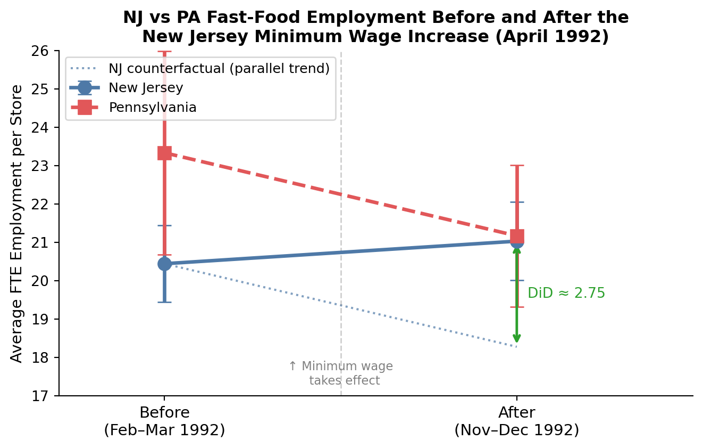

| Table 2: Store Characteristics Before Minimum Wage Rise | ||
| Means (standard errors in parentheses) for wave 1 | ||
| Variable | New Jersey | Pennsylvania |
|---|---|---|
| FTE employment (wave 1) | 20.439 (0.508) | 23.331 (1.351) |
| Starting wage ($/hr, wave 1) | 4.612 (0.020) | 4.630 (0.040) |
| % employees affected (NJ only) | 49.621 (2.042) | — |
| Hours open per day | 14.418 (0.153) | 14.525 (0.332) |
| Proportion Burger King | 0.411 | 0.443 |
| Proportion KFC | 0.205 | 0.152 |
| Proportion Roy Rogers | 0.248 | 0.215 |
| Proportion Wendy's | 0.136 | 0.190 |
| Proportion company-owned | 0.341 | 0.354 |
| Number of stores | 331 | 79 |
| Source: Card and Krueger (1994), replication of Table 2. | ||
Replication: Card & Krueger (1994)
Minimum Wages and Employment: A Case Study of the Fast-Food Industry in New Jersey and Pennsylvania
economics
causal inference
difference-in-differences
Introduction
Does raising the minimum wage destroy jobs? For decades, the standard economics textbook answered with a confident yes: if you raise the price of labor above the market-clearing wage, employers will demand less of it. Card and Krueger (1994) challenged this consensus using a natural experiment that has since become one of the most cited and replicated papers in empirical economics.
On April 1, 1992, New Jersey raised its minimum wage from $4.25 to $5.05 per hour — the highest state minimum wage in the US at the time. Pennsylvania, its neighbor to the west, kept its minimum at $4.25. Card and Krueger surveyed 410 fast-food restaurants in both states before (February–March 1992) and after (November–December 1992) the New Jersey increase, then compared what happened to employment on each side of the state line.
The key insight is that New Jersey and Pennsylvania are economically similar enough to serve as each other’s counterfactuals. Pennsylvania-side restaurants were not subject to the minimum wage change, so their post-period employment approximates what New Jersey employment would have looked like if the minimum wage had not increased. This is the logic of difference-in-differences (DiD): the causal effect of the policy is estimated as:
\[\hat\tau = (\bar{Y}_{NJ,\text{after}} - \bar{Y}_{NJ,\text{before}}) - (\bar{Y}_{PA,\text{after}} - \bar{Y}_{PA,\text{before}})\]
The DiD design isolates the treatment effect by differencing out any time trends that affect both states equally — recessions, seasonal patterns, or other macro shocks. As long as NJ and PA would have followed parallel employment trends in the absence of the minimum wage hike (the parallel trends assumption), the DiD estimator is unbiased.
Card and Krueger’s headline finding: employment in New Jersey increased relative to Pennsylvania after the minimum wage rose. The standard textbook prediction was wrong — or at least, did not hold in this setting.
This post replicates their main results.
Main Analysis
Table 2 — Store Characteristics Before the Minimum Wage Rise
Before examining employment changes, we need to confirm that New Jersey and Pennsylvania restaurants look comparable on observable dimensions before the policy took effect. If the two groups differ significantly in, say, chain mix or ownership structure, those differences — rather than the minimum wage — could explain any post-period divergence.
The table below replicates the key rows of Card & Krueger’s Table 2. The figures are weighted means across stores; the standard errors are in parentheses.
The two states look reassuringly similar before the policy change: average starting wages ($4.61 in NJ vs $4.63 in PA), hours open, and chain composition are all comparable. New Jersey stores are somewhat smaller (20.4 vs 23.3 FTE), but the difference is modest and the parallel-trends assumption rests on trends, not on levels. Around 50% of NJ employees were earning below the new $5.05 minimum, meaning the wage increase was binding enough to generate real variation across stores.
Table 3 — Employment Before and After the Minimum Wage Rise (DiD)
This is the heart of the paper. The table shows average FTE employment for New Jersey and Pennsylvania restaurants in each survey wave, the within-state change, and the DiD estimate.
Full-time-equivalent (FTE) employment is defined as: \[\text{FTE} = \text{(full-time employees)} + 0.5 \times \text{(part-time employees)} + \text{(managers)}\]
| Table 3: Average FTE Employment Before and After the NJ Minimum Wage Rise | |||
| Standard errors in parentheses — all available observations | |||
| Variable | New Jersey | Pennsylvania | NJ − PA |
|---|---|---|---|
| FTE before | 20.44 (0.51) | 23.33 (1.35) | -2.89 (1.44) |
| FTE after | 21.03 (0.52) | 21.17 (0.94) | -0.14 (1.08) |
| Change (after − before) | 0.59 (0.48) | -2.17 (1.25) | 2.75 (1.34) |
| Source: Card and Krueger (1994), replication of Table 3 (Panel A, FTE employment, all observations). FTE = full-time + 0.5 × part-time + managers. Standard errors for the 'Change' row use the paired store-level difference; standard errors for 'Before' and 'After' use the cross-sectional standard error of the mean. | |||
Reading across the highlighted bottom row: New Jersey employment rose by np.float64(0.59) FTE workers after the minimum wage increase, while Pennsylvania employment fell by np.float64(2.17). The DiD estimate is np.float64(2.75) (SE = np.float64(1.34)), meaning NJ stores employed roughly np.float64(2.8) more workers relative to PA after the minimum wage rose. This difference is statistically significant (t ≈ np.float64(2.05)) and directly contradicts the simple supply-and-demand prediction.
Table 4, Column (i) — Regression Evidence
The DiD estimate can also be recovered through a simple regression. Card & Krueger regress the change in FTE employment (\(\Delta \text{FTE} = \text{FTE}_2 - \text{FTE}_1\)) on a New Jersey indicator:
\[\Delta\text{FTE}_i = \alpha + \beta \cdot \text{NJ}_i + \varepsilon_i\]
The sample is restricted to stores with valid employment data in both waves and non-missing wage information (n = 357), matching the authors’ Table 4 estimation sample.
The coefficient \(\beta\) captures the same quantity as the DiD: how much more (or less) NJ employment changed compared to PA. The intercept \(\alpha\) estimates the PA trend.
| Table 4 (Column i): OLS Regression of Change in FTE Employment | ||||
| Dependent variable: ΔFTE = FTE₂ − FTE₁ · n = 357 stores | ||||
| Term | Coefficient | Std. Error | t-statistic | p-value |
|---|---|---|---|---|
| New Jersey (β) | 2.33 | 1.19 | 1.95 | 0.052 |
| Intercept (α) | -2.13 | 1.07 | -1.98 | 0.048 |
| Source: Card and Krueger (1994), replication of Table 4, column (i). Sample: stores with non-missing ΔFTE and non-missing change in starting wage (or permanently closed in wave 2). | ||||
The regression confirms the DiD: \(\hat\beta =\) np.float64(2.33) (SE = np.float64(1.19)), meaning New Jersey stores experienced np.float64(2.33) more FTE workers added on average, compared to Pennsylvania. The intercept — the PA trend — is np.float64(-2.13), consistent with the raw PA change of np.float64(-2.17) computed in Table 3.
Something Additional: Visualizing the Parallel Trends
Tables communicate numbers; a chart communicates the story. The figure below shows the same DiD result visually — average FTE employment in NJ and PA before and after the minimum wage increase. If the parallel-trends assumption holds, the two lines should have moved together in the absence of the policy. Instead, NJ’s employment pulled away from Pennsylvania’s after April 1992.

The solid blue line (NJ) and dashed red line (PA) moved in opposite directions: PA employment fell while NJ employment rose. The dotted blue line shows the counterfactual — where NJ employment would have gone if it had followed the same trend as PA. The green double-headed arrow is the DiD estimate: the gap between what NJ actually achieved and what the parallel-trends counterfactual predicts.
The 95% confidence intervals (error bars) show substantial uncertainty, especially for Pennsylvania which has only 79 stores. Nevertheless, the direction of the effect is clear, and the NJ-PA divergence is statistically significant. Card and Krueger’s conclusion stands: a modest minimum wage increase did not reduce fast-food employment in New Jersey. If anything, it raised it — consistent with monopsonistic labor markets where a wage floor can increase both wages and employment simultaneously.
Reference: Card, D. and Krueger, A.B. (1994). “Minimum Wages and Employment: A Case Study of the Fast-Food Industry in New Jersey and Pennsylvania.” American Economic Review, 84(4), 772–793. Data: Card’s website, UC Berkeley.